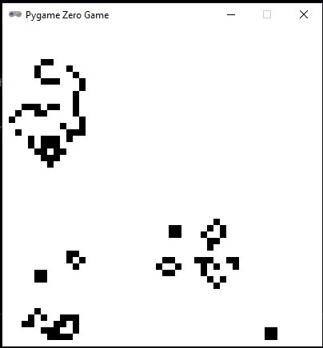
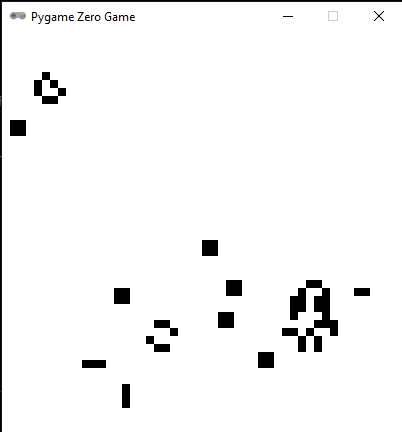
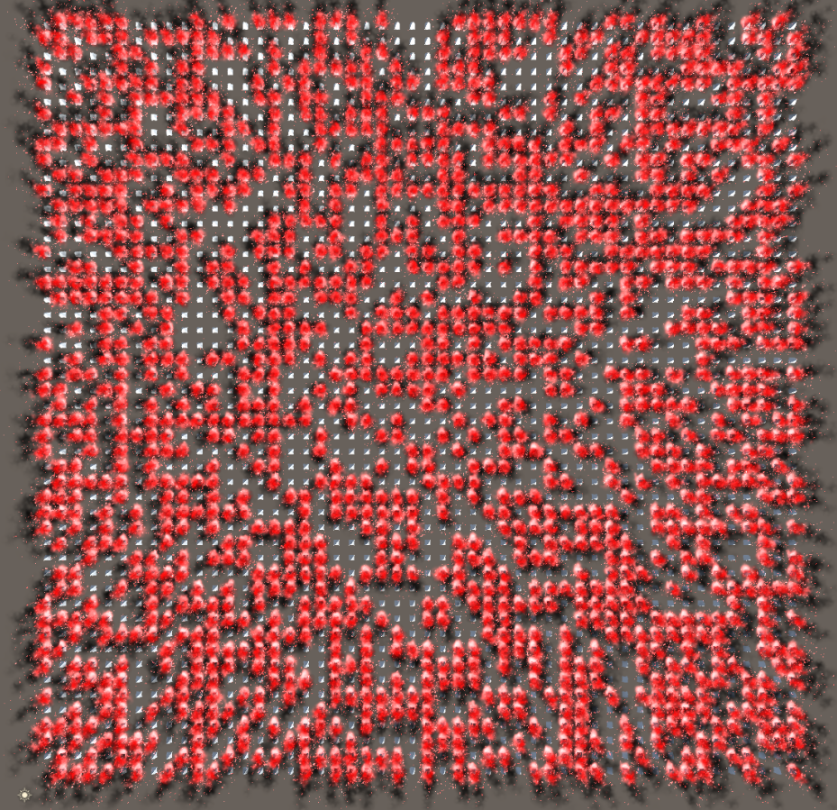
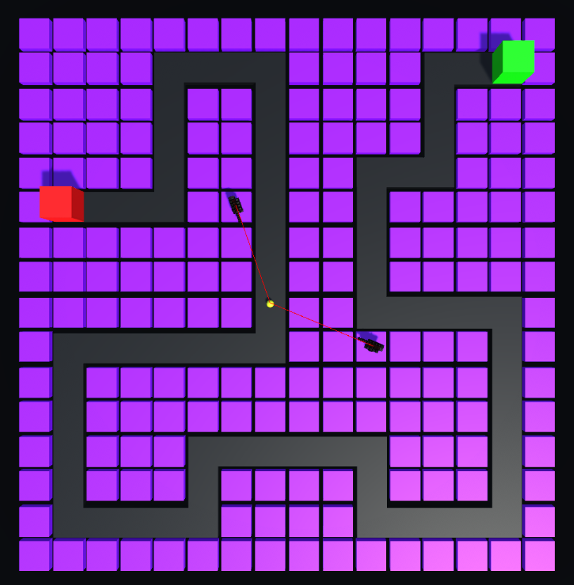
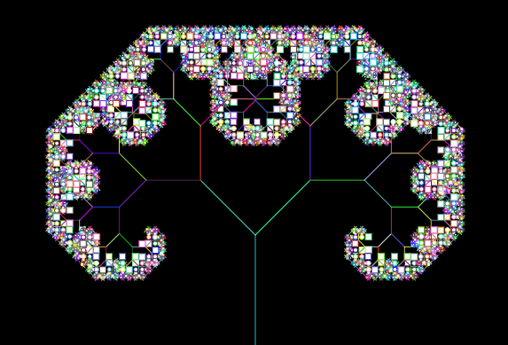

This was a project that was based on Chapter 7 of Shiffman's Nature of Code. The idea was to use python in order to implement rulesets that would generate interesting visual outputs--this one is my favorite.
 
This was a project based on the Game of Life by Conway where his rules were implemented in python. The code allows you to start with marked squares by clicking with your mouse and then pressing enter to see the rules in action. This challenge my python knowledge and gave me insight to a really cool application of code.

This was a project based again on the Game of Life where we had to implement cellular automata into a 3d environment via Unity. In this case, I used trees as the cells and would light them on fire depending on the fill percent and the rules from the Game of Life. This challenged my ability to figure out how to convert python code to C# while dealing with Gameobjects in Unity.

This was a project aiming to find a way to implement vectors into some kind of game or other simulation. I chose to do it Unity to make another 3d game where I would use vectors to aim the turrets at the target enemy and to create an aggro range for the turrets to begin aiming. This project helped me explore how vectors could be useful in programming a game in this case.

This was a project that used L-systems in order to make something we might see in the natural world--in this case, a tree. This project challenged my knowledge of python and allowed me to see how simple rulesets could make/resemble something in our natural world.